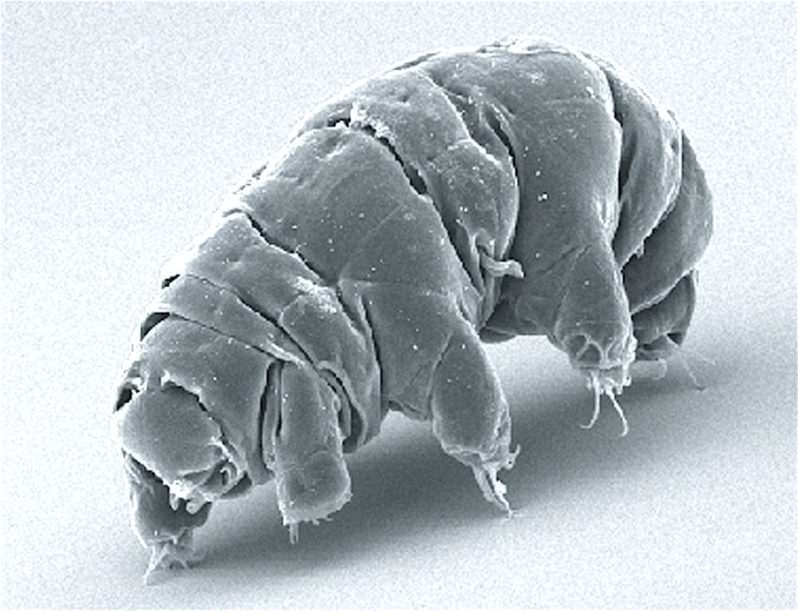

1Su ayısı nedir?
Tardigradlar, halk arasındaki adıyla su ayıları, genellikle 1 milimetreden küçük, sekiz bacaklı, tombul hayvanlardır. Mikroskop altında küçük, pençeli ayılara benzedikleri için bu adı almışlardır.
Yosunlarda, likenlerde, toprakta, göllerde ve okyanuslarda yaşarlar. Himalayaların tepesinden okyanusun derinliklerine, kutuplardan tropik ormanlara kadar dünyanın neredeyse her yerinde bulunurlar.
2Askıya alınmış yaşam
Tardigradların en büyük yeteneği, ortam kuruduğunda vücutlarındaki suyun neredeyse tamamını kaybedip bacaklarını içeri çekerek küçük bir fıçıya benzeyen bir şekle girmeleridir. Buna 'tun' durumu denir.
Bu hâlde metabolizmaları neredeyse tamamen durur. Ne yer ne içer ne de büyürler. Ama ölmezler. Bu durumda laboratuvarlarda mutlak sıfıra yakın soğuğa, kaynama noktasının üzerindeki sıcaklıklara, okyanus tabanından çok daha yüksek basınçlara ve insanlar için öldürücü olandan yüzlerce kat fazla radyasyona dayanabildikleri gösterildi. Yeniden suyla karşılaştıklarında birkaç saat içinde canlanabilirler.

3Uzaya gönderildiler
Eylül 2007'de Avrupa Uzay Ajansı'nın FOTON-M3 görevinde, kurutulmuş tardigradlar uzaya gönderildi ve yaklaşık 10 gün boyunca uzay boşluğuna maruz bırakıldı. Bir kısmı yalnızca vakuma, bir kısmı vakumla birlikte güneşin morötesi ışınlarına ve kozmik radyasyona maruz kaldı.
Dünya'ya döndüklerinde, yalnızca uzay boşluğuna maruz kalan tardigradların büyük kısmı yeniden canlandı ve üremeye devam etti. Güneşin tam morötesi ışınımına maruz kalanların ise çoğu öldü ama birkaçı yine de hayatta kaldı. Bu, uzay boşluğunda hayatta kalabildiği gösterilen ilk hayvandı. Çalışma 2008'de Current Biology dergisinde yayımlandı.
4Neden bu kadar dayanıklılar?
Bilim insanları tardigradların hücrelerinde, kurudukları zaman hücre içini cam benzeri bir yapıya dönüştürerek koruyan özel proteinler buldu. Ayrıca 'Dsup' adı verilen bir protein, DNA'larını radyasyon hasarına karşı koruyor.
Bu proteinler, gelecekte ilaçların ve aşıların buzdolabına gerek kalmadan saklanması ya da insan hücrelerinin radyasyondan korunması gibi alanlarda araştırılıyor.
💡 Biliyor muydun?
- Tardigradlar ilk kez 1773'te Alman zoolog Johann August Ephraim Goeze tarafından tanımlandı. Goeze onlara 'küçük su ayısı' adını verdi.
- Tardigradlar 'yok edilemez' değildir. Aktif hâldeyken oldukça hassastırlar. Süper güçleri yalnızca kurumuş 'tun' durumunda geçerlidir.
- Bir tardigradı görmek için ıslatılmış bir parça yosunu basit bir mikroskop altında incelemek çoğu zaman yeterlidir.
✅ Kaynaklar
📷 Görseller
- Kapak: Schokraie E, Warnken U, Hotz-Wagenblatt A, Grohme MA, Hengherr S, et al. (2012) · CC BY 2.5 · Wikimedia Commons
- Elektron mikroskobuyla çekilmiş bir tardigrad (su ayısı): Schokraie E, Warnken U, Hotz-Wagenblatt A, Grohme MA, Hengherr S, et al. (2012) · CC BY 2.5 · Wikimedia Commons